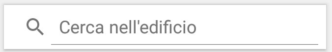
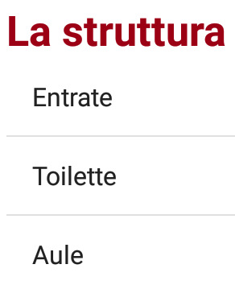
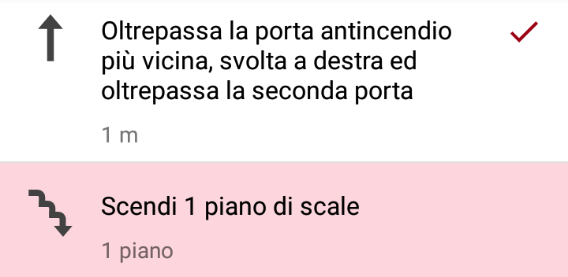

Grazie a CLIPS, muoversi all'interno di edifici molto grandi non sarà più un problema: spesa al centro commerciale? Visita medica in ospedale? Lezione universitaria nel campus? Nessun problema, fatti guidare da CLIPS per raggiungere le tue destinazioni. Le funzionalità di navigazione sono disponibili solo per gli edifici supportati.
Nella schermata pricipale di CLIPS è possibile accedere ad informazioni di varia natura relative all'edificio nel quale ti trovi: nome, indirizzo, orari di apertura al pubblico, categorie di POI presenti.
CLIPS ti aiuta a scoprire luoghi interessanti all'interno dell'edificio in cui ti trovi. Per visualizzare i luoghi vicini alla tua posizione attuale, esegui un tap sul bottone:
Per visualizzare tutti i luoghi di interesse presenti nell'edificio in cui ti trovi, esegui un tap bottone:
Dalla schermata principale di CLIPS è possibile scegliere una destinazione in due modi:


Le istruzioni vengono fornite sotto forma di lista: le istruzioni completate sono contrassegnate da un check, mentre l'istruzione corrente è evidenziata per essere più facilmente riconoscibile.

Attraverso il tap su una certa istruzione, puoi accedere a descrizione dettagliata e foto relative a quella istruzione.
Nella sezione Preferenze > Opzioni percorso puoi scegliere il tipo di percorso più adatto a te:
Nella sezione Le tue mappe puoi visualizzare le mappe già scaricate e decidere se eliminarle o aggiornarle. Per visualizzare l'elenco di tutte le mappe disponibili, esegui un tap sul bottone:
Aiutaci ad espandere la nostra rete ed aiuta le persone ad orientarsi all'interno del tuo edificio. Contattaci all'indirizzo leaf.gruppo@gmail.com.